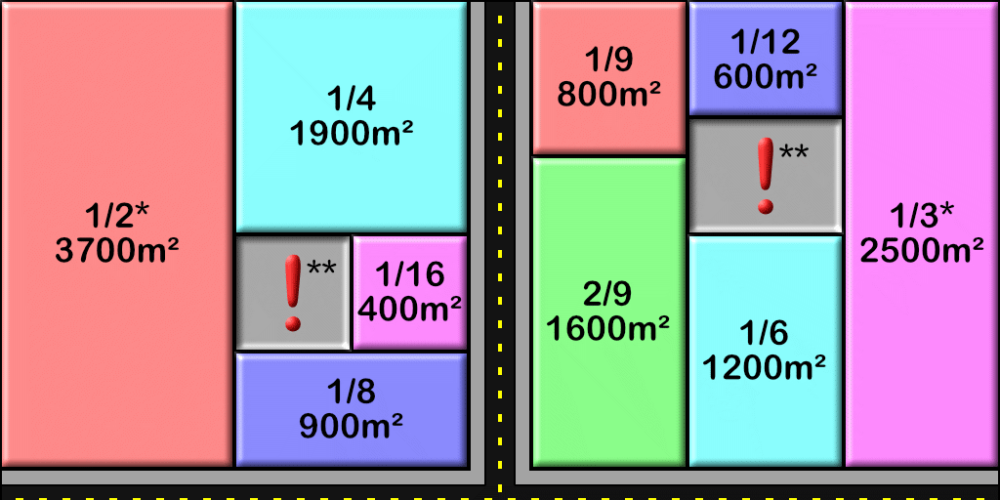

Hybrid Creative & Survival Minecraft Server
A Minecraft server made for gay furry dudes!
Develop the city in creative mode, or go exploring in survival!
Most importantly, just go wild and have fun.

A Minecraft server made for gay furry dudes!
Develop the city in creative mode, or go exploring in survival!
Most importantly, just go wild and have fun.

The rules are simple:
Follow these, and you'll be good to go!
Important Notes:
Your gamemode will be set to Creative immediately upon entering the city boundaries; BUT, you will not be able to build until you claim a land plot. Ask Redaun to set up your plot once you've found a spot you like.
Each player is allowed to claim plots of land adding up to 1 CB to start. The first build cannot be larger than 1/4 CB, but once that build is done, it can be expanded to Extra-Large sizes. When all the plots adding up to 1 CB are finished, the player will be allowed to claim more land. There is plot-size example board in Spawn Square to help you visualize the plot sizes available.
Once claimed, you can build anything you like! Everyone has access to WorldEdit within their own land as well, to make things easier. If you are unfamiliar with WorldEdit, there is a short tutorial center in the northwest corner of Spawn Square. Additionally, you can check out the WorldEdit Quick Start and the WorldEdit Commands pages for information and useful commands!
Available plot sizes and their approximate area:

* 1/2 CB and 1/3 CB size plots are not available for first-time players.
** All plots MUST have road access. They cannot be landlocked by other plots.
Your gamemode will be set to Survival immediately upon exiting the city boundaries. Be careful! You can fall to your death if flying out of the city!
There is a teleport hub at spawn which will take you in each cardinal direction out of the city, or to Dimension2 (an extra survival world). Additional mini-teleport stations can be requested once you have a survival base set up, for easy coming and going to the city. Unless, you know, you enjoy living in seclusion hundreds of miles away. Then go for it.
Survival zones have basic survival rules! Go wild outside! But again, don't grief other players' properties or crash the server.
Since this server is hosted on Minehut, logging in is a bit odd.
Minehut's Bedrock support is still under development and often has connection issues. Please be patient with them.
There are currently 5 challenges that builders can aim to complete, if they are in need of building inspiration.
More challenges may show up in the future. Players who complete all five challenges get a special Builder's Role (actual benefits of this role currently undecided).